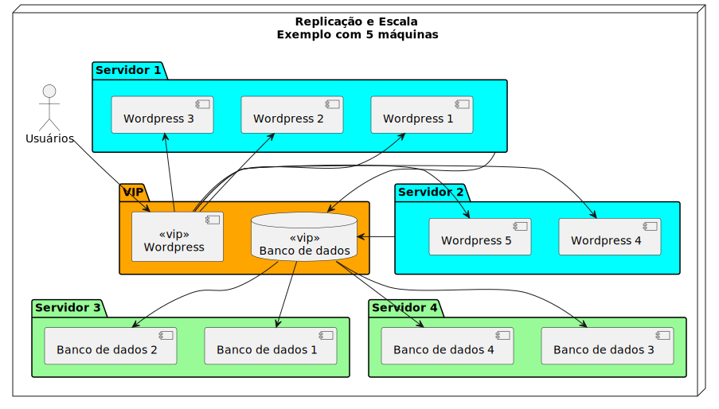

Arquitetura
Escala Horizontal
Diferentemente da escala vertical, que significa basicamente aumento de hardware, a escala horizontal envolve filas, comunicação, rede, muitas configurações extras na aplicação e em alguns casos até mudanças para suportar o recurso de réplicas.

Figura 3. Arquitetura em servidores separados
| Existem diversas variações, inclusive a opção elástica (automática ou não), que permite ter poucos servidores na maior parte do tempo e aumentar o consumo apenas quando necessário. |